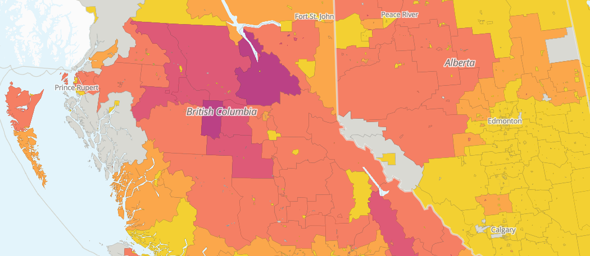
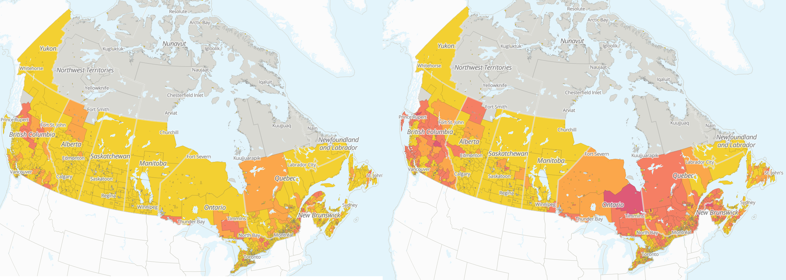
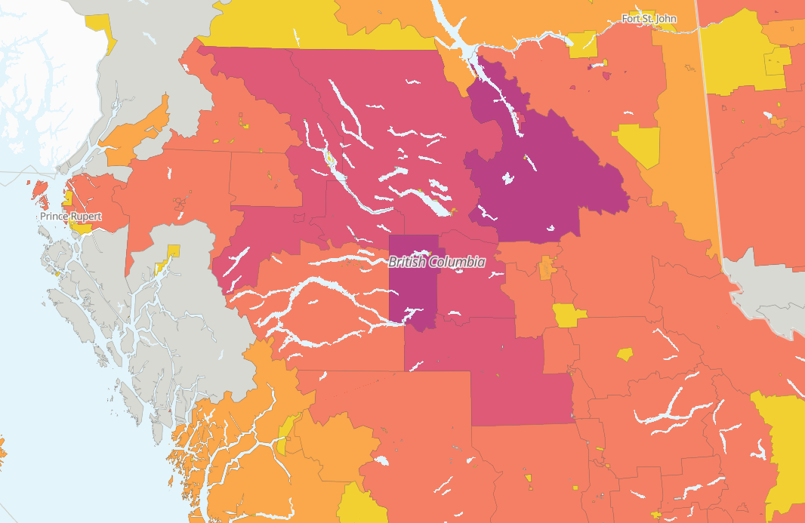
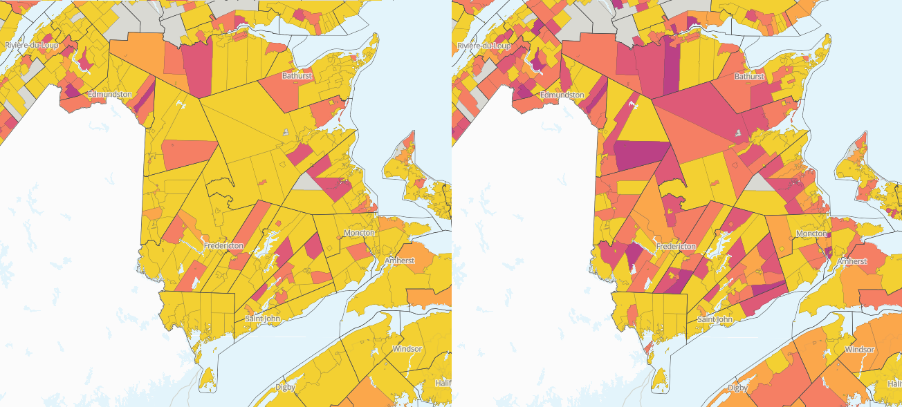

By Yihoi Jung,
Karen Chapple,
Jeff Allen,
Tara Vinodrai
~ February 2026

The impacts of lumber tariffs on Canadian cities
An update on the potential local impacts of lumber tariffs on jobs and businesses across Canada
Lumber is a big export item for Canada. This blog provides an overview of the history of the Canada-U.S. lumber trade and examines recent economic challenges due to the softwood lumber tariffs and their potential implications for local businesses and employees. Canadian lumber companies have advocated for better trade conditions since countervailing duties and anti-dumping rates started to increase over a decade ago, but with new tariffs imposed on softwood lumber in October 2025, businesses across the country are now facing up to 45% in total tariffs and duties. This is devastating mills by rendering exports to our southern neighbour less profitable than ever before.
Background: Canada-U.S. lumber trade
Canada is one of the world's largest producers of softwood lumber. In 2020, the industry was valued at $10 billion and supplied 80% of the United States' softwood lumber imports. Softwood – fast growing trees that have a wide range of uses in framing material and furniture – accounts for 98% of all lumber types in Canada and is a major industry across the interior regions of provinces, especially in British Columbia, where the softwood industry accounts for ~46% of Canada's lumber exports to the U.S.. In 2020, nearly 70% of all softwood lumber production was exported, with 84% of those exports going to the U.S. due to the demand for lumber in housing and construction.
Despite Canada being its primary source of imported lumber (~40% of U.S. wood product imports), the U.S. has imposed duties over the past four decades in order to leverage their domestic lumber industry. Canadian lumber companies have fought against anti-dumping (AD) and countervailing duties (CVD) through NAFTA, WTO, U.S. courts and, more recently, CUSMA. Both countries were bound by the Softwood Lumber Agreement (SLA) from 2006-2015, which provided stability for Canadians; however, the duties returned in 2017, 19 months after the agreement expired. During the COVID-19 pandemic, the producer price of softwood lumber more than tripled because of an increase in demand for single detached home construction driven by excess household savings and low interest rates. Since then, lumber has been falling in exports, a trend exacerbated by the tariffs.
The chart below shows Canada’s lumber exports to the U.S. in dollar amounts for softwood lumber (based on HS code 4407). While the proportion of Canada’s exports to the U.S. compared to the rest of the world remained consistent from 2019 - 2024, the dollar value of lumber fluctuated due to inflation, the pandemic, and supply & demand, leading to rises and falls.
Due to the price surges from the home improvement boom in 2021, houseowners decreased their DIY projects and mills were able to catch up on supply. Lumber briefly returned to the pre-pandemic price range in July 2021, but in November an historic landslide event in B.C., that killed 5 people and forced 18,000 to evacuate, ceased supply from Canada's largest softwood exporter, causing prices to surge again. Just as supply was recovering in 2022, the Federal Reserve increased interest rates to over 5% to combat inflation, which plummeted demand and decreased the overall export valuation of softwood lumber.
Economic fluctuation between the borders affects lumber value, as seen in the figure below. In August 2025, the U.S. Department of Commerce doubled CVDs, lowering imports from Canada. On October 14, 2025, Trump's second administration imposed a 10% global tariff on softwood lumber as well as a 25% tariff on certain furniture & kitchen cabinet items. This 25% was set to increase to 30% for furniture and 50% for kitchen cabinets, but was delayed until January 2027. Across all countries, Canadian forestry exports experienced a 3-month consecutive decline in late 2025. For exports to the U.S., Global Affairs Canada reported an estimated $6.06 billion in softwood lumber exports in 2025, down 12% from $6.79 billion in 2024 (calculated from the monthly U.S. exports report).
In response, the Carney government retaliated with their own tariffs and is bolstering the sector by granting loans to help companies pivot into new market exports overseas (such as to China). A focus on domestic investment and diversification is also in motion with an emphasis on building with local lumber.
Current tariff landscape
Similar to the findings in our preliminary analysis, Canada’s lumber industry is tightly tied to the U.S. due to the geographic convenience and the demands of U.S. imports. While negotiations continue, the U.S. government is still enacting and changing tariff plans. See our current tariffs page for a full list of tariffs currently in place.
AD and CVD rates have been imposed since the 1980s. However, from 2019 to 2023, these rates increased significantly for imported softwood lumber – AD rates reached 17% in 2019 and 35% in 2023, with combined AD/CVD rates pushing into the 40th percentile range depending on the year and company. These tariffs have directly impacted softwood lumber, which used to be protected by Section 232 of the Trade Expansion Act – an act granting the U.S. President permission to impose tariffs on goods that threaten national security.
In 2026, the situation remains unpredictable — for example, there have been recent last minute tariff changes to upholstered furniture, kitchen cabinets, and vanities. Lumber was up in price in January 2026 according to the Madison's Lumber Reporter – a weekly newsletter on Canadian & U.S. lumber — but producers are hesitant to push production due to the ongoing uncertainties.
The impact of lumber in British Columbia
For British Columbia, Canada's largest exporter of lumber, the quantity of exported softwood lumber has dropped year over year since 2019. In 2025, from January to October, export volume dropped ~10%.
Note that the percent share of exports to the U.S. hasn't fluctuated much and that lumber quantity fell from 2022, similar to the fall in global lumber exports shown in the first graph (using the harmonized system code 4407). We can also infer that while lumber quantity fell from 2019 to 2020 due to the landslides, B.C. rebounded by meeting the high demand in 2021. Recently, B.C. mills have been struggling to keep up with duties and tariffs. For example, in February 2026, Domtar, a pulp mill company, closed their operations in Crofton, B.C., laying off 350 workers. In response, David Eby, the Premier of B.C., seeks to build a court case against the U.S. to challenge the softwood lumber tariff.
Map findings
Using our mapping and visualization tool we can trace potential tariff vulnerabilities across Canada. The new softwood lumber tariffs widely affect interior regions of provinces, most notably the B.C. interior, northern Quebec, northern Ontario, and the Maritimes.

Jobs in the lumber industry before and after October 14, 2025, when softwood lumber tariffs were enacted.
Click here to view interactive map
The next map shows the total proportion of employees by primary residence estimated to be vulnerable to Trump’s tariffs in the B.C. Interior, which produces the most softwood lumber in the province.

Proportion of employees by place of residence estimated to be vulnerable in the B.C. Interior region.
Click here to view interactive map
Finally, here is an example of New Brunswick's impacted businesses across census subdivisions before and after October 14. Due to the tough financial pressure on lumber companies across the province, Susan Holt, the Premier, has advocated for progress on negotiations.

Proportion of businesses estimated as vulnerable in New Brunswick by census subdivision.
Click here to view interactive map
Our maps show that the impacts of the tariffs are consistent with export reports across the lumber industry. Logging-dependent cities like Quesnel, B.C., Campbell River, B.C., Prince George, B.C., Kapuskasing, Ont., and La Tuque, Que. are feeling the brunt of these effects today. The supply chain, constrained by log shortages and adjacent tariffs in steel and automotives, is hindering lumber exports in many avenues. While the Canadian government recognizes and supports the industry through financial aid, the future remains uncertain due to the bilateral interdependency of the U.S. and Canada.
Read about the impact of truck tariffs on Canadian cities, check out the preliminary report on our findings, explore our interactive mapping tool to see the potential impacts across Canadian neighbourhoods, or view the city ranking charts for aggregate impacts.